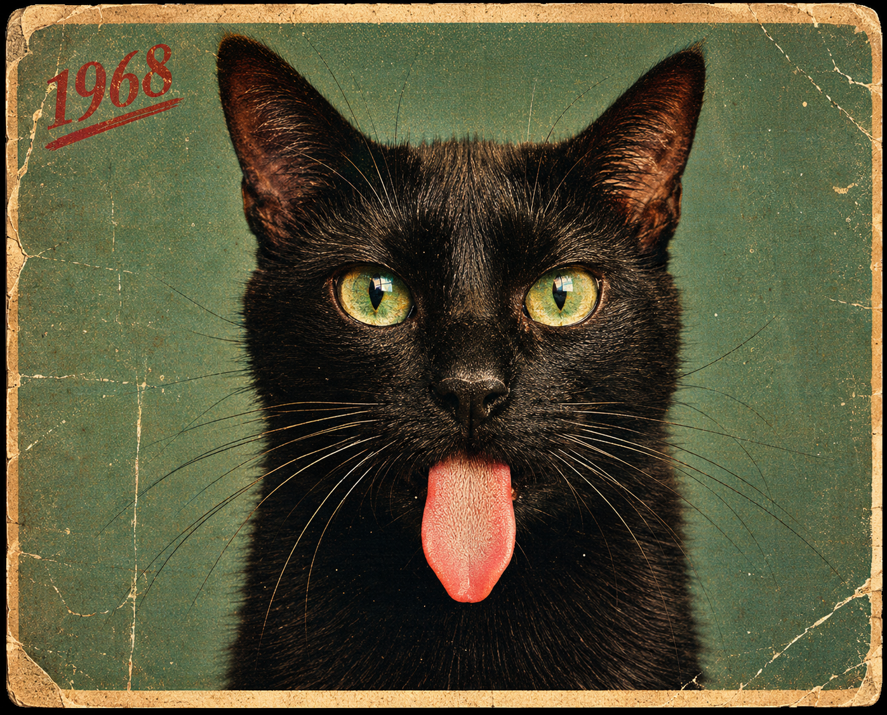
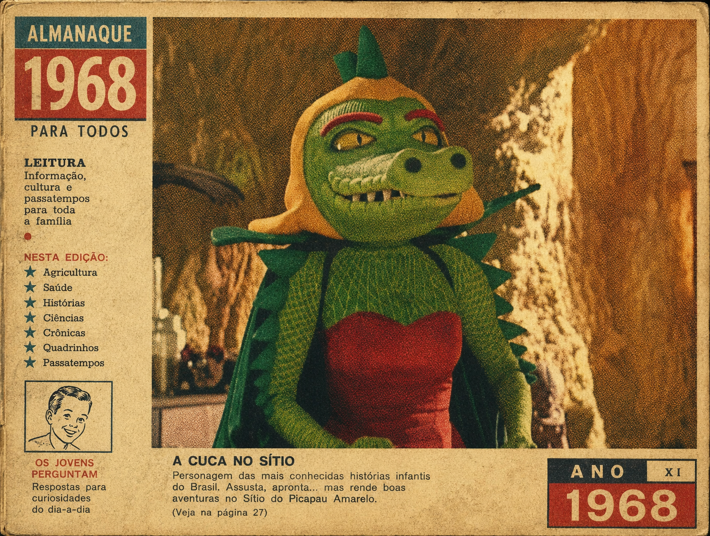
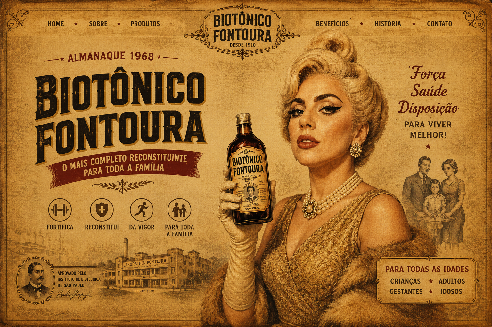

Gato Preto na Rua
“Em 1968, dona Alzira parou na esquina ao ver um gato preto atravessar a rua. Preferiu voltar para casa e esperar alguns minutos antes de sair novamente.”
Ler Mais
"A chegada da Cuca"
“Naquela noite escura, ouviu-se um assobio estranho perto da mata. Pedrinho percebeu que a Cuca estava aprontando mais uma vez.”
Explorar
Biotônico Fontoura
“Reconstituinte tradicional das famílias brasileiras, recomendado para épocas de fraqueza, cansaço e falta de vigor
Descobrir